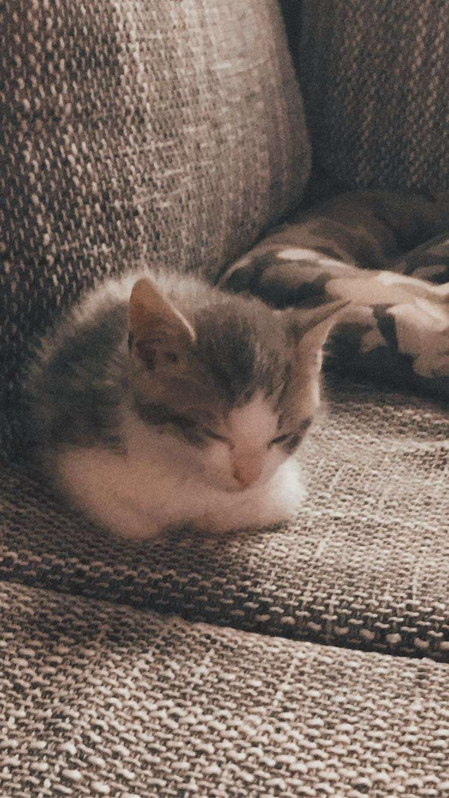
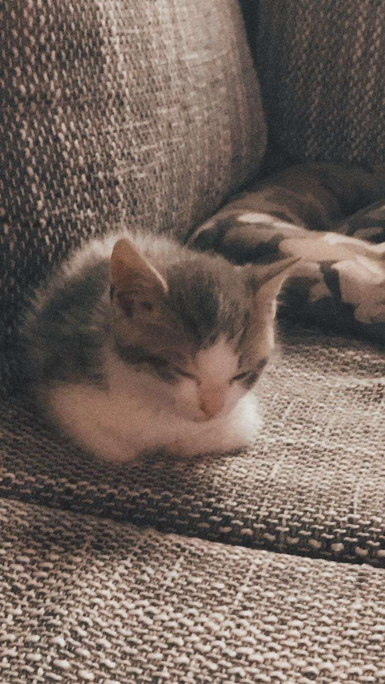
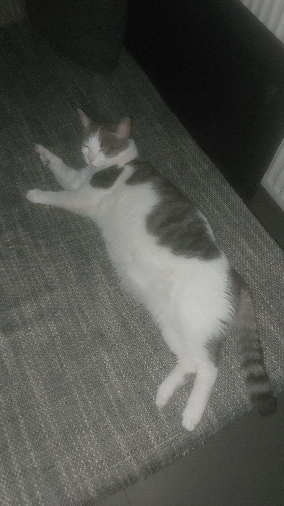

Il est mignon
Pour le prouver, voici une photo de lui lorsqu'il était petit.
Il est donc effectivement très mignon.
Evidemment, ca, c'est quand il a mangé ses croquettes.
Pour cet exercice, je vais vous présenter mon chat Kiwi.
Pour le prouver, voici une photo de lui lorsqu'il était petit.
Il est donc effectivement très mignon.
Evidemment, ca, c'est quand il a mangé ses croquettes.
Je n'ai malheureusement pas de photo pour illustrer cela mais je peux assurer que quand il n'a pas encore mangé ses croquettes il est très ingrat.
Il me lance souvent des regards de la mort.
Pas très pratique quand on est aux toilettes.
Le voici donc quand il a mangé ses croquettes et qu'il n'est donc plus ingrat.
C'est un chat d'intérieur, donc il ne va pas très loin au fait.
| Endroits préférés | Endroits détestés |
|---|---|
| Sa litière | Dehors |
| Son panier | Ma chambre |
| Le balcon |
class Chat:
def __init__(self, nom):
self.nom = nom
self.niveau_bonheur = 100
def miauler(self):
return f"{self.nom} dit : Miaou!"
def jouer(self, minutes):
self.niveau_bonheur += minutes
return f"{self.nom} s'amuse pendant {minutes} minutes et son bonheur augmente !"
# Créons une instance de notre Kiwi
kiwi = Chat("Kiwi")
# Jouons avec lui
print(kiwi.miauler())
print(kiwi.jouer(10))
print(f"Niveau de bonheur actuel de {kiwi.nom}: {kiwi.niveau_bonheur}%")